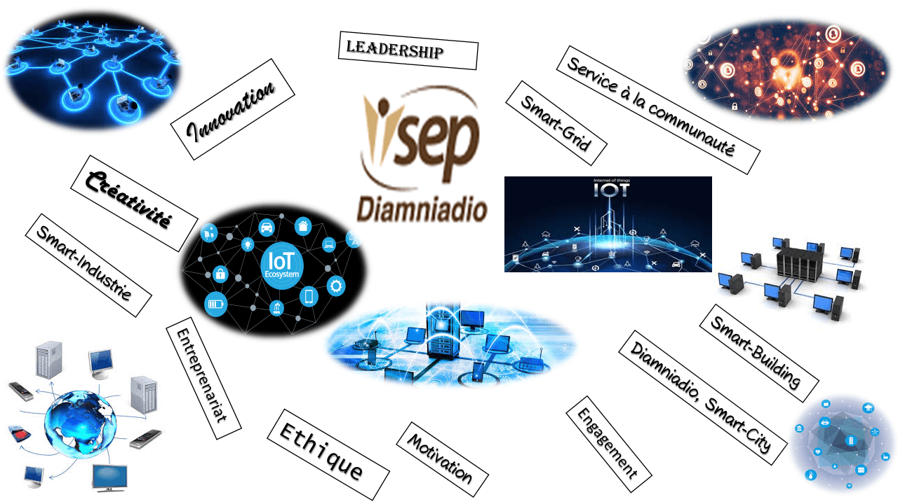
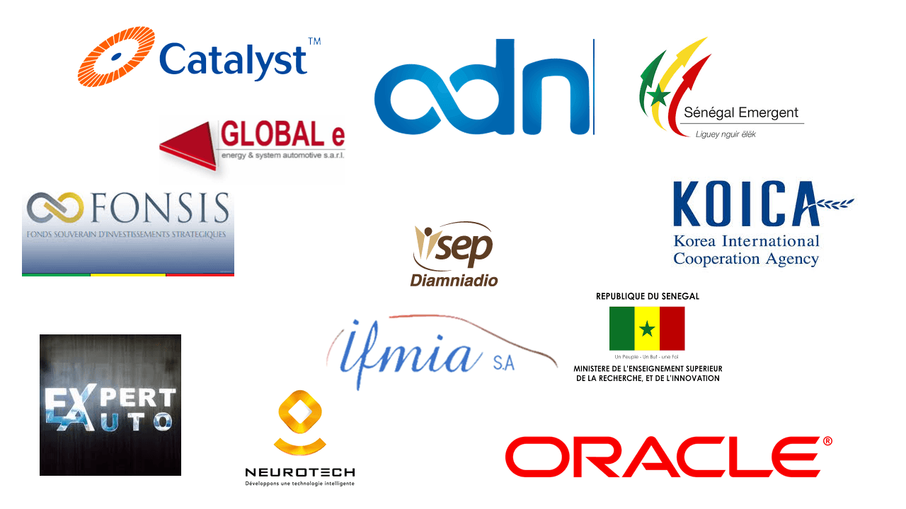

GDE
Gestion des Données Entreprises

RSIOT
Reseaux Securité et Internet des Objets
APD
Analyse et Performance Digitale

DBE
Developpement Back-End
DFE
Developpement Front-End
DBA
Administrateur des Bases de Données

Partenaires
Les partenaires de l'ISEP de Diamniadio
MTIC
Statistiques